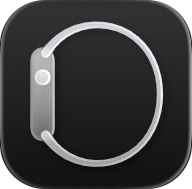

Configurazione
Inizia
Sveglie
Altro
✕
Modifica sveglia
✓
04
05
06
07
08
09
10
57
58
59
00
01
02
03
Ripetizione
Mai >
Etichetta
Sveglia
Suono
Radar >
Posticipo
Durata del posticipo
9 min
Elimina sveglia

 Sveglie
Sveglie

 Sveglie
Sveglie